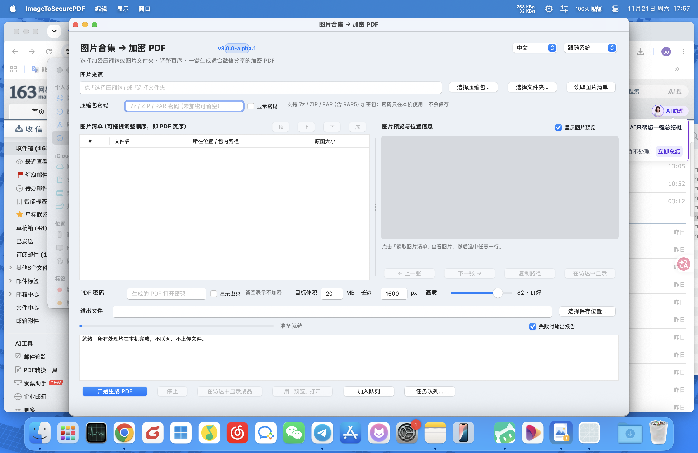

ImageToSecurePDF 第一版说明 3.0.0-alpha.1
2026-11-21 · 一个共享 Go 引擎 + Windows/macOS 两个原生前端 · 已本地跑通完整链路
这一版能看什么
- macOS 桌面端沿用你现有「图片合集转加密PDF」的完整 AppKit 界面（2711 行源码），不是简化草稿：原生分栏、拖拽排序、预览、显示密码、画质滑块、失败报告、任务队列、中英切换、明暗主题、隐私说明全部保留，只是把底层引擎换成了合并版共享 Go 引擎，品牌与版本改为 ImageToSecurePDF 3.0.0-alpha.1。
- 共享 Go 引擎不再先用临时目录解压，而是直接流式读取 ZIP / 7z / RAR 里的图片。
- PDF 侧已经合入合并版需要的能力：AES-256、权限位、文件名书签、PDF 元数据、A4/按 DPI 页面、无损嵌入模式。
- Windows 前端已按同一套协议写好骨架，尚未在本机打包 EXE。
本地实测结果
| 项目 | 结果 |
|---|---|
| 输入 | 24 张 JPEG，原图共 3.9 MB；打成带密码 ZIP 后 835 KB（测试密码 Test123456） |
| 输出 | demo_secure.pdf，995 KB，24 页，AES-256 打开密码 OpenSesame |
| 耗时 | 1.4 秒（4 线程，M 系列 Mac） |
| 压缩 | 目标体积 2 MB，实际 995 KB；一轮完成，未触发重压 |
| 结构校验 | 24 个页面对象、24 个书签、/Encrypt、/DCTDecode、/Outlines、/Info 均存在 |
| 错误密码 | 生成失败且不留下 PDF，坏图逐张跳过并输出日志 |
| 自动化测试 | go test ./... 全部通过 |
原型截图

文件位置
| 内容 | 路径 |
|---|---|
| 项目根目录 | ImageToSecurePDF/ |
| macOS 应用 | macos/ImageToSecurePDF.app |
| macOS 安装包 | ImageToSecurePDF_macOS_alpha1.zip |
| 共享 Go 引擎 | engine/ |
| Windows 前端骨架 | windows/ |
| 统一配置与消息表 | shared/job.schema.json、shared/messages.json |
| 样例 PDF | tests/fixtures/demo_secure.pdf |
还没做 / 已知限制
- Windows 端只是 PySide6 骨架，没有打包 EXE，也没有合入原 Studio 的明暗主题、九列详情视图和右键菜单。
- 第一版只实现 AES-256；AES-128/RC4 暂不支持。
- 加密 PDF 在微信内置预览中的兼容性还没用你真实的分享场景回归。
- 分卷 RAR 仍不支持；这是纯 Go RAR 读取器的已知边界。
- 严格来说，书签/元数据里的中文字符串还没有随 PDF 加密字典一起加密；后续版本需要补齐。
界面修正说明
第一版曾用一个 440 行的 SwiftUI 草稿界面，确实像半成品。已改为直接复用本机已安装的「图片合集转加密PDF」完整 AppKit 源码（2711 行），保留全部原生控件与交互，仅替换品牌、版本和内置 Go helper。草稿已备份为 macos/App.swift.swiftui-draft.bak。
测试压缩包密码 Test123456 和 PDF 密码 OpenSesame 只用于样例，请勿用于真实文件。